Dot Plots
A Dot Plot is a graphical display of data using dots.
Example: Minutes To Eat Breakfast
A survey of "How long does it take you to eat breakfast?" has these results:
| Minutes: | 0 | 1 | 2 | 3 | 4 | 5 | 6 | 7 | 8 | 9 | 10 | 11 | 12 |
| People: | 6 | 2 | 3 | 5 | 2 | 5 | 0 | 0 | 2 | 3 | 7 | 4 | 1 |
Which means that 6 people take 0 minutes to eat breakfast (they probably had no breakfast!), 2 people say they only spend 1 minute having breakfast, etc.
And here is the dot plot:

You can create your own dot plots.
Another version of the dot plot has just one dot for each data point like this:
Example: (continued)
This has the same data as above:

But notice that we need numbers on the side so we can see what the dots mean.
Grouping
Example: Access to Electricity across the World
Some people don't have access to electricity (they live in remote or poorly served areas). A survey of many countries had these results:
| Country | Access to Electricity (% of population) |
|---|---|
| Algeria | 99.4 |
| Angola | 37.8 |
| Argentina | 97.2 |
| Bahrain | 99.4 |
| Bangladesh | 59.6 |
| ... | ... etc |
But hang on! How do we make a dot plot of that? There might be only one "59.6" and one "37.8", etc. Nearly all values will have just one dot.
The answer is to group the data (put it into "bins").
In this case let's try rounding every value to the nearest 10%:
| Country | Access to Electricity (% of population, nearest 10%) |
|---|---|
| Algeria | 100 |
| Angola | 40 |
| Argentina | 100 |
| Bahrain | 100 |
| Bangladesh | 60 |
| ... | ... etc |
Now we count how many of each 10% grouping and these are the results:
| Access to Electricity (% of population, nearest 10%) |
Number of Countries |
|
|---|---|---|
| 10 | 5 | |
| 20 | 6 | |
| 30 | 12 | |
| 40 | 5 | |
| 50 | 4 | |
| 60 | 5 | |
| 70 | 6 | |
| 80 | 10 | |
| 90 | 15 | |
| 100 | 34 |
So there were 5 countries where only 10% of the people had access to electricity, 6 countries where 20% of the people had access to electricity, etc
Here is the dot plot:

Percent of Population with Access to Electricity
And that is a good plot, it shows the data nicely.